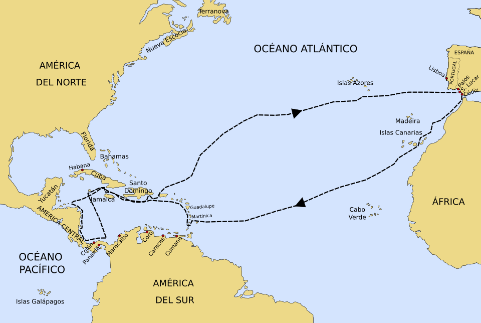
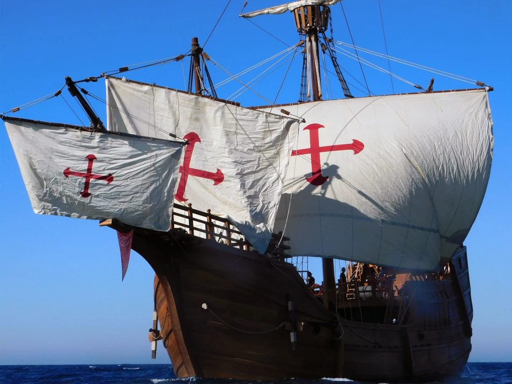

La Colonia y la Lucha por la Identidad
La segunda estrofa del Himno Nacional de Honduras sirve como una continuación directa de la narrativa introducida en la primera, pero con un enfoque más explícito en la figura del explorador que interrumpió la paz precolombina. Esta estrofa se centra en el "audaz navegante", a quien se le da una historia y una motivación, contextualizando así el momento del descubrimiento. En contraste con la idealización de la primera estrofa, esta se adentra en la realidad histórica, describiendo el anhelo del explorador y el inevitable choque cultural.
El verso, "De un país donde el sol se levanta, más allá del atlante azulado," establece el origen geográfico del navegante: España. La frase "donde el sol se levanta" no solo es una referencia a la ubicación oriental de la península ibérica con respecto a América, sino que también sugiere una tierra de "luces" o de un amanecer de una nueva era. El "atlante azulado" se refiere al océano Atlántico, una inmensa barrera que separaba a los dos mundos. Esta línea subraya la gran distancia y el desafío que el navegante superó, pintándolo como un personaje con un gran propósito.
El siguiente verso, "aquel hombre te había soñado y en tu busca a la mar se lanzó," personifica la tierra de Honduras como un objeto de deseo y anhelo. El navegante no solo la descubrió por casualidad, sino que "la había soñado". Esta idea eleva el acto del descubrimiento a una misión predestinada, casi mítica. Se presenta al navegante como un visionario, alguien impulsado por un ideal que lo llevó a aventurarse en lo desconocido. La frase "en tu busca a la mar se lanzó" enfatiza la determinación y el coraje de Cristóbal Colón, quien zarpó con un objetivo claro en mente, demostrando la audacia a la que se aludía en la estrofa anterior.
El himno continúa con "Cuando erguiste la pálida frente, en la viva ansiedad de tu anhelo,". La "pálida frente" de la patria representa el estado de quietud y sumisión en el que se encontraba la "India virgen". El despertar de este sueño, el momento del avistamiento de los barcos, se describe como una "viva ansiedad". Esta ansiedad no es necesariamente de miedo, sino de la incertidumbre y el asombro ante lo desconocido. La patria se despierta de su letargo, su "frente" se levanta por primera vez, anticipando el cambio inminente. Es un momento de gran tensión y expectación, donde la tranquilidad de un mundo se enfrenta al dinamismo de otro.
La estrofa cierra con el verso "bajo el dombo gentil de tu cielo ya flotaba un extraño pendón.". El "dombo gentil de tu cielo" es una hermosa metáfora del cielo hondureño, un símbolo de la belleza natural del país que ha sido constante a lo largo de las estrofas. Sin embargo, el "extraño pendón" que ahora flota bajo ese cielo marca la ruptura de la paz. El "pendón" o bandera extranjera es el símbolo de la conquista y la colonización. Su presencia en los cielos hondureños es una señal de que el territorio ya no es un lugar virgen e intocable. Es el fin de una era y el comienzo de otra. Esta línea resume el impacto de la llegada de los europeos: la imposición de una nueva autoridad, una nueva cultura y una nueva bandera que reclamaba el control sobre una tierra que nunca le había pertenecido.
Letra
De un país donde el sol se levanta,
más allá del atlante azulado,
aquel hombre te había soñado
y en tu busca a la mar se lanzó.
Cuando erguiste la pálida frente,
en la viva ansiedad de tu anhelo,
bajo el dombo gentil de tu cielo
ya flotaba un extraño pendón.